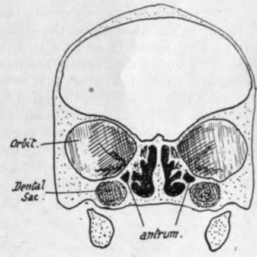

The Development Of The Skull As A Whole. Part 5
Description
This section is from the book "The Anatomy Of The Human Skeleton", by J. Ernest Frazer. Also available from Amazon: The anatomy of the human skeleton.
The Development Of The Skull As A Whole. Part 5
The growth of the alveolar regions in both jaws depends on dentition, and thus its full development in each is not reached before the twentieth year or thereabouts, although the temporary dentition brings about a rapid growth in the first five or six years of life. The space required by the teeth and the increasing height of the maxillae push the mandible down, and in this way lead (Fig. 209) to the lessening of the angle between ramus and body in the lower jaw, in order to keep the teeth in apposition ; the angle at the first dentition is about 140 degrees and in adult jaws about 120 degrees. Thus the appearance of an angle in the mandible may to some extent be also looked on as a result of the later growth of the upper jaws. The body of the mandible increases in length proportionately in keeping with the antero-posterior growth of the face, and in this way provides room for the three permanent molars.
The smallness of the maxilla is reflected in the orbit, where the position of the two main fissures is decidedly lower, and the spheno-maxillary fissure is also much wider, than in the adult : as the maxilla grows the fissure is narrowed, and at the same time the malar region is pushed and rotated into a more external position, thus raising the levels of the fissures.
The frontal bone, in two halves, is seen above the face : each half shows a marked frontal eminence from which ridges radiate on the surface of the bone.
Among numerous other minor details of the front aspect it may be pointed out that the lower edges of the nasal bones are straight and not notched or serrated as in the adult, and that the lachrymal may be somewhat rotated so that its surface looks forwards as well as outwards.
The lateral view of the new-born skull shows well-marked parietal eminences, where the skull is broadest. At a lower level the junction of bones at the asterion and pterion may be more or less incomplete (see previous reference to fontanelles). The temporal squama is not fused with the underlying petrous, nor is there any appearance of a mastoid process : the tympanic plate is represented by the tympanic ring, so that the membrane is practically on the surface of the skull.* The ring is fused with the squama in part, and its circumference is not much less than that of the adult membrane, so that this membrane is proportionately larger in the newly-born. The want of development of the mastoid and tympanic plate leaves the stylo-mastoid foramen more on the outer than the basal aspect : when these structures grow it is overlapped by them externally and becomes a basal opening. The Digastric arises from the outer surface just behind the foramen. The zygoma is not joined with the malar and does not possess complete roots. The styloid process is cartilaginous.
Fig. 214.-Section through foetal skull.
* This does not mean that the membrane is visible in the living infant from the surface, for the outer fibrous and cartilaginous meatus is of proper proportionate length and thus conceals the membrane.
A posterior view shows the prominent occipital protuberance, from which fine ridges radiate out into the upper part of the bone ; a partial separation of this upper part from the lower may be seen at the sides, or a sagittal slit between the two halves of the supra-occipital above. These slits are not always present, but when they are they run into the postero-lateral and lambdoid fontanelles respectively. The occipital bone at birth is in four pieces joined by cartilage.
The junction between the bones in the new-born skull may be summed up as follows :-
(a) Fusion of half bones across mid-line : all cartilage bones and no membrane bones.
(b) Fusion of elements making single bones : has occurred in membrane bones, but not at all or only to some extent in cartilage bones.
The skull grows rapidly during the first six or seven years of life : the growth is largely in the facial region, the volume of which compared with that of the cranium has been estimated to be i : 8 at birth and to have risen to i : 4 at five years of age. The second dentition is accompanied by another period of increased development, so that by the twenty-first year the ratio between face and cranium has risen to 1 : 2. This second growth period brings the air sinuses particularly into evidence, so that the expression may be considerably modified by it.
The adult skull has a cranial capacity varying between 1,000 and 1,800 c.c, with an average of about 1,400 c.c. In Europeans the skull is usually over 1,450 c.c. in capacity, and such skulls are termed megacephalic. Mesocephalic skulls, such as the Chinese, have a capacity between 1,350 and 1,450 c.c, while microcephalic skulls, such as are found in lower races, have a capacity below 1,350 c.c*
The adult human skull is characterised by its relatively enormous capacity with a jaw arch comparatively small. The large brain development that brings about these human characters also leads to an increased width of the middle region of the skull, with shifting forward of the lateral eyes and corresponding narrowing of the nose : this last condition, however, is no doubt associated with the general retrogression of the facial region. The character of the human foramen magnum shows complete adaptation to the erect position, the plane of the foramen being practically horizontal, whereas in anthropoid apes it is rather oblique and in quadrupeds it looks directly backwards. The human skull is almost perfectly balanced on the vertebral column, and its muscular attachments for support are proportionately weak. Other evidence of increased brain development can be seen in the delayed fusion of the various elements that cover in the cranial cavity f in this connection it may be pointed out that the cranial elements have increased in relative size and development, while some of the facial bones, such as the lachrymal and palate, show signs of retrogression when compared with tho e seen in skulls of lower animals.
Continue to:
- prev: The Development Of The Skull As A Whole. Part 4
- Table of Contents
- next: The Development Of The Skull As A Whole. Part 6